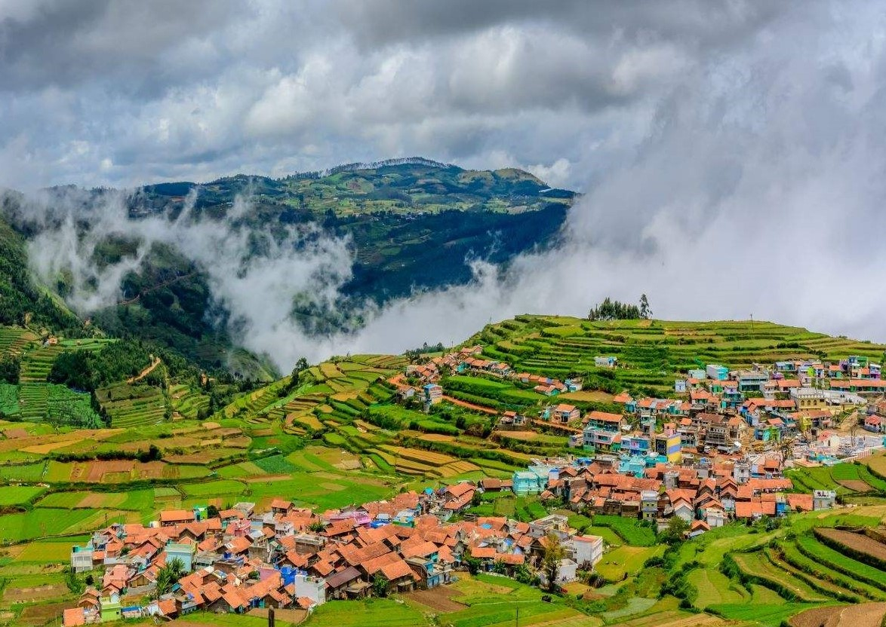

Kodaikanal is a hill town in the southern Indian state of Tamil Nadu. It’s set in an area of granite cliffs, forested valleys, lakes, waterfalls and grassy hills. At 2,000 meters above sea level, the town centers around man-made, star-shaped Kodaikanal Lake, bordered by evergreen forest. Rowing boats can be hired, and hikers and cyclists follow the 5k Lake Road path around the shore.